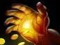
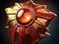

Fireblast
оглушает выбранного врага и наносит урон.

Поддержка — позиция 4
защищать союзников, замедлять и оглушать врагов, создавать давление на линии.
обычно отдавай крипов керри. Забирай только безопасный фарм, который союзники не могут получить.
оглушает выбранного врага и наносит урон.
наносит постепенный урон и замедляет цель.
увеличивает скорость атаки и передвижения союзника.
позволяет некоторым способностям и предметам срабатывать несколько раз.




